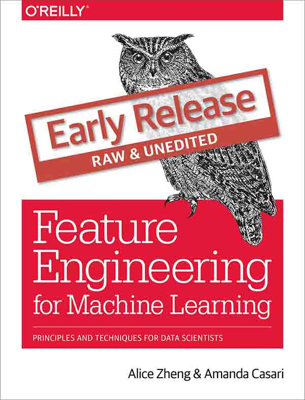

面向机器学习的特征工程

原文（注册后可阅读）：Feature Engineering for Machine Learning (Early Release)
欢迎任何人参与和完善：一个人可以走的很快，但是一群人却可以走的更远
目录
- 一、引言
- 二、简单数字的奇特技巧
- 三、文本数据：展开、过滤和分块
- 四、特征缩放的效果：从词袋到 TF-IDF
- 五、类别特征：机器鸡时代的鸡蛋计数
- 六、降维：使用 PCA 压缩数据集
- 七、非线性特征提取和模型堆叠
- 八、自动化特征提取器：图像特征提取和深度学习
- 九、回到特征：将它们放到一起
- 附录、线性模型和线性代数基础
负责人
- @飞龙: 562826179
免责声明
ApacheCN 纯粹出于学习目的与个人兴趣翻译本书，不追求任何经济利益。
本译文只供学习研究参考之用，不得用于商业用途。ApacheCN 保留对此版本译文的署名权及其它相关权利。
下载
Docker
docker pull apachecn0/fe4ml-zh
docker run -tid -p <port>:80 apachecn0/fe4ml-zh
# 访问 http://localhost:{port} 查看文档
PYPI
pip install fe4ml-zh
fe4ml-zh <port>
# 访问 http://localhost:{port} 查看文档
NPM
npm install -g fe4ml-zh
fe4ml-zh <port>
# 访问 http://localhost:{port} 查看文档
赞助我们